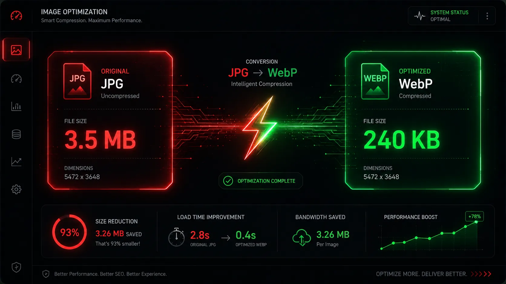

Optimizing your images shouldn't require an advanced degree in computer science, nor should it require purchasing expensive software subscriptions like Adobe Photoshop. If you are a developer, an independent blogger, or an e-commerce site owner, converting your bulky JPG and PNG files to the modern WebP format is the absolute fastest way to improve your site's overall speed.

In this comprehensive guide, we will walk you through exactly how to use our flagship optimization tool, Webp Moder by Shekh, to convert your image library efficiently, safely, and securely in just a few clicks.
Why Choose Client-Side Conversion?
Before we dive into the tutorial, it is critically important to understand why our specific tool is unique compared to the hundreds of other "free converters" found on Google. Most generic online converters require you to upload your files to their remote servers. This consumes your internet bandwidth, forces you to wait in server queues, and presents a massive privacy risk for your sensitive personal or corporate images.
Webp Moder is entirely client-side. This means it utilizes advanced HTML5 Canvas technology to process the image directly inside your own web browser. Your images never leave your computer or phone. It is 100% private, instantaneous, and comes with absolutely zero daily usage limits.
The 4-Step Conversion Process
- Open the WebP Converter Navigate directly to the homepage of Webp Moder by Shekh. The tool is fully responsive, meaning it works flawlessly on desktop computers, tablets, and mobile phones alike.
- Upload Your Image You can drag and drop your massive JPG, PNG, or standard JPEG file directly into the designated dashed upload zone. Alternatively, simply click the "browse files" text to open your device's file manager and select an image manually.
- Set the Quality Slider Once your image is loaded into the interface, you will see a "Compression Quality" slider. By default, it is set to 80%, which is generally the perfect balance between high visual quality and low file size. You have full manual control to adjust this anywhere from 10% to 100% depending on your specific web needs.
- Convert and Download Click the glowing "⚡ Convert to WebP" button. Because the tool uses your device's CPU, your image will be processed in milliseconds. You will instantly see a side-by-side comparison screen showing exactly how many megabytes you saved. Finally, click the "Download WebP Image" button to save the optimized file securely to your hard drive.

What Quality Setting Should You Use?
If you are unsure where exactly to set the compression slider, you can use these professional rules of thumb to guide your optimization:
- 90% - 100%: Best for artist portfolios, massive hero background images, and professional photography sites where absolute visual perfection is required.
- 75% - 85%: The "Sweet Spot". Ideal for standard blog posts, e-commerce product photos, and general web graphics. It provides massive size reduction with no noticeable quality drop.
- 50% - 70%: Perfect for small thumbnails, background textures, or images viewed strictly on mobile devices where fine details are not necessary.
Try the Tool Yourself Right Now
No sign-ups, no hidden fees, and zero data tracking. Optimize your images securely in your browser.
⚡ Launch Free ConverterFrequently Asked Questions
Is there a limit to how many files I can convert?
No. Because all the processing happens locally on your own device rather than on our servers, we do not impose any daily limits, queues, or paywalls. You can convert as many images as you need, entirely for free.
Does this tool support batch or bulk conversion?
Currently, our tool focuses on providing maximum precision for single files via the live preview and interactive quality slider. However, our development team is actively exploring bulk processing capabilities for future updates.
Will my transparent backgrounds stay transparent?
Yes. If you upload a PNG with a transparent background, the resulting WebP file will retain that exact transparency while significantly lowering the overall file size.
Conclusion
Speeding up your website does not have to be a complicated, expensive chore. By bookmarking a secure, client-side tool like Webp Moder by Shekh, you empower yourself with a professional-grade image optimization workflow that is completely free, instantaneous, and highly secure. Give it a try on your heaviest JPG today and see the results for yourself.